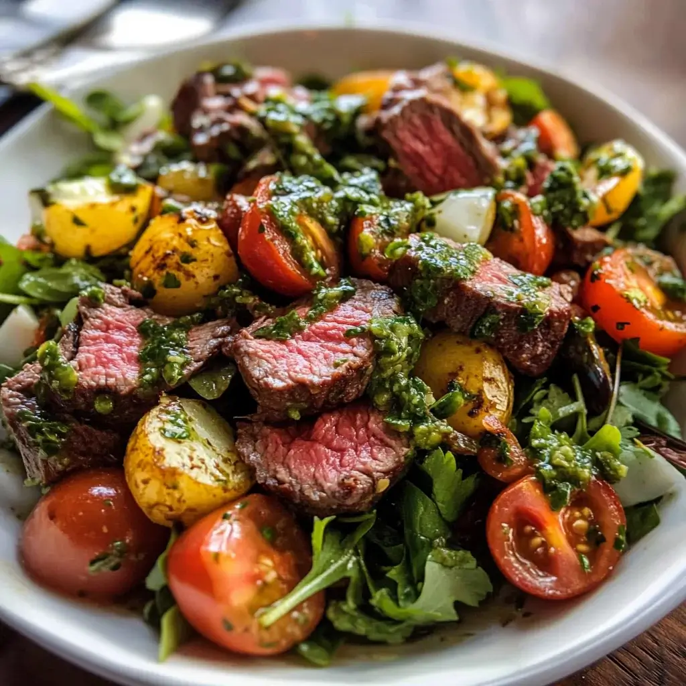

Chopped chimichurri steak salad

About Chimichurri steak salad
This isn't your average, run of the mill bowl of greens; it's a vibrant, robust, and incredibly satisfying meal that's bursting with flavour.
At its heart is the star duo: perfectly cooked, juicy steak and a zesty, herbaceous homemade chimichurri sauce. This Argentinian-inspired condiment,
packed with fresh parsley garlic, oregano, and a tangy kick of vinegar, not only marinates and dresses the steak but also brings the entire salad to life.
Paired with crisp greens, sweet cherry tomatoes, sharp red onion, and other delightful additions, this salad is a textural and flavourful masterpiece. It's ideal
for a hearty lunch, an impressive dinner, or a standout dish at your next gathering. Plus, it's naturally low-carb and packed with protein, making it a healthy
choice that doesn't compromise on taste. The Chimichurri steak salad is bound to become a new favorite culinary repertoire.
Ingredients:
- 1 pound flank steak, trimmed
- 2 teaspoons kosher salt, divided
- 3/4 teaspoon freshly grounded black pepper
- 2 tablespoons neutral oil, such as vegetable oil
- 1/2 cup of extra-virgin olive oil
- 1/4 cup of finely chopped cilantro
- 3 tablespoons of fresh lemon juice
- 2 tablespoons of red wine vinegar
- 2 cloves garlic, grated
- 1 teaspoon of honey
- 1/2 teaspoon of dried oregano
- 1/4 teaspoon chrushed red pepper
- 2 cups of cherry tomatoes, halved
- 1 cup of chopped persian cucumbers
- 1/2 cup of finely chopped red onion
- 1/2 medium avocado, cubed
Steps:
- Preheat a large cast-iron skillet over medium-high heat.
- Season your steak with 1 teaspoon of salt and 1/2 teaspoon of pepper.
- Add oil to the preheated skillet and carefully add the seasoned steak; cook, flipping occasionally, until deeply browned and an instant-read thermometer registers 48.8 degrees C (120 degrees F), 6 to 8 minutes per side.
- Once cooked, transfer the steak to a cutting board and cover with aluminium foil to rest for 10 minutes.
- Meanwhile, whisk together the extra-virgin olive oil, parsley, cilantro, lemon-juice, vinegar, garlic, honey, oregano, crushed red pepper, remaining 1 teaspoon of salt, and 1/4 teaspoon pepper in a small bowl.
- Toss tomatoes, cucumbers, roasted red bell pepper, and red onion with 1/2 cup of the dressing in a large serving bowl.
- Slice the rested steak against the grain and cut into 1-inch pieces; toss with salad and avocado.
- Drizzle the salad with the remaining 1/4 cup dressing before serving.
Back to home